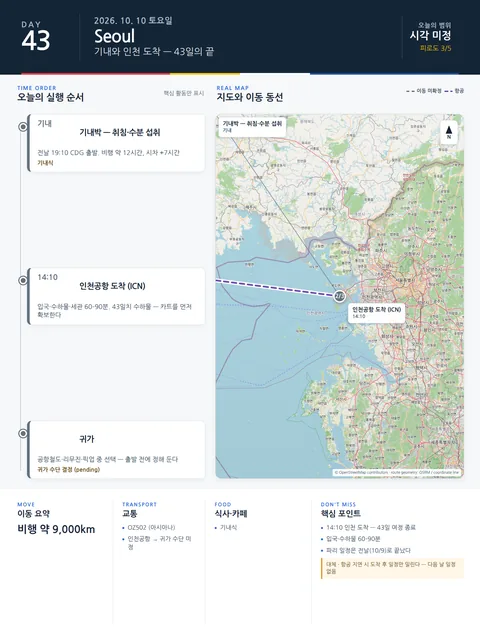

Day 43 · 10/10 토 · 기내→Seoul
- 핵심 실행
- 기내박·인천 14:10 도착
- 권장 출발
- 기내 취침
- 완충
- 도착 후 입국·수하물 60–90분
- 예약
- 이 날짜로 잡힌 예약 없음 · 현황
시간표
| 시간 | 일정 | 실행 포인트 |
|---|---|---|
| 기내 | 취침·수분 섭취 | 비행 약 12시간, 시차 +7시간 |
| 14:10 | 인천 도착 (OZ502) | 예약 확정 |
| 도착 후 60–90분 | 입국·수하물·세관 | 43일치 수하물 — 카트 먼저 확보 |
| 이후 | 귀가 | 공항철도·리무진·픽업 귀가 수단 결정 |
피로도
3/5
이 날의 메모
기내와 인천 도착 — 43일의 마지막 날 귀국
이 날은 파리 일정이 아니다. 전날 밤 CDG를 떠난 비행기 안에서 시작한다.
상세 실행 확인
- 최고 리스크
- 시차·수하물
- 우선 삭제
- 없음
- 대체안
- 없음
- 식사·휴식
- 기내식
- 잠금 필요
- 없음
Google 실행지도
기내박과 인천 14:10 도착
지도 펼치기
지도는 펼칠 때만 불러옵니다.
구간별 길찾기
Daily Action Map

실제 좌표와 OpenStreetMap을 사용한 실행용 요약입니다. 도로·대중교통 상황은 출발 직전에 다시 확인하세요.